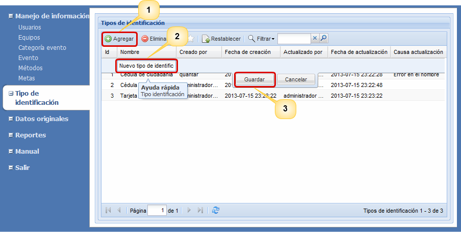
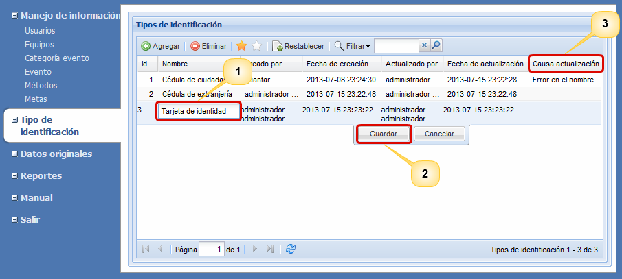
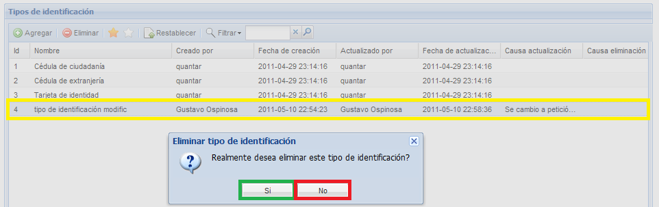
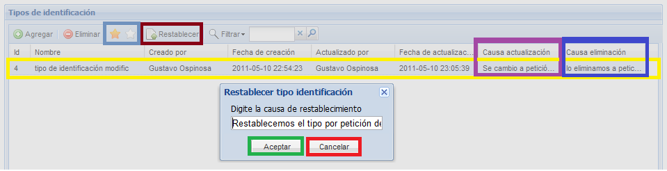

Agregar
tipo de identificación
Para agregar un tipo de identificación
pulse el botón Agregar
(1), diligencie el nombre del nuevo tipo de
identificación en la fila que aparece arriba de la
lista (2) y pulse el botón Guardar
(3). En la Figura 2 se muestran los botones y el
campo de edición.

Figura 2. Pantalla para agregar un nuevo tipo de identificación.
Actualizar
Para actualizar un tipo de identificación debe
dar doble click sobre
el tipo de identificación que desea
modificar, ingrese el nuevo nombre (1) y pulse el
botón Guardar (2),
luego el sistema le preguntará porque razón desea
actualizar esta información, digite la razón y pulse el botón Aceptar. Luego
el
sistema le mostrará un breve mensaje en el que informa del
éxito de
la actualización. En la Figura 3 se pueden identificar
los botones
desplegables para actualizar un tipo de identificación.
En la columna
Causa actualización
(3) aparecerá la última razón de actualización.

Figura 3. Pantalla para la actualización de tipos de
identificación.
Eliminar
Para eliminar un tipo de
identificación, seleccione de la lista de tipos el
tipo de identificación que desea eliminar (1) y
pulse el botón Eliminar (2),
el
sistema desplegará una pequeña ventana donde le preguntará
si realmente
desea eliminar el tipo de
identificación en donde debe seleccionar la opción Si
(3)
y porque razón desea eliminarlo, digite la
razón y pulse el botón Aceptar.
Luego el sistema le mostrará un breve mensaje en el que
informa del éxito de la eliminación. Dicho proceso de
eliminación, se evidencia en la Figura 4.

Figura 4. Pantalla para el borrado de tipos de identificación.
Restablecer
Bajo el supuesto de que usted haya eliminado un
tipo de identificación
sin
querer, usted tiene la posibilidad de recuperar la
información siguiendo los pasos que se describen a continuación:
seleccione la opción para ver los tipos
de identificación
eliminados denotado por una estrella blanca (1), seleccione
de la lista el tipo de identificación que desea recuperar
(2) y pulse el botón Restablecer (3); luego
el sistema le preguntará porque razón usted desea
restablecer el tipo,
digite la razón (4) y pulse el botón
Aceptar (5). Luego el
sistema le mostrará un breve mensaje en el que notifica el
éxito de la operación.
En la Figura 5 se
muestra la la pantalla que permite llevar a cabo el proceso
de restablecimiento de tipos de identificación.

Figura 5. Pantalla para el restablecimiento de tipos de
identificación.